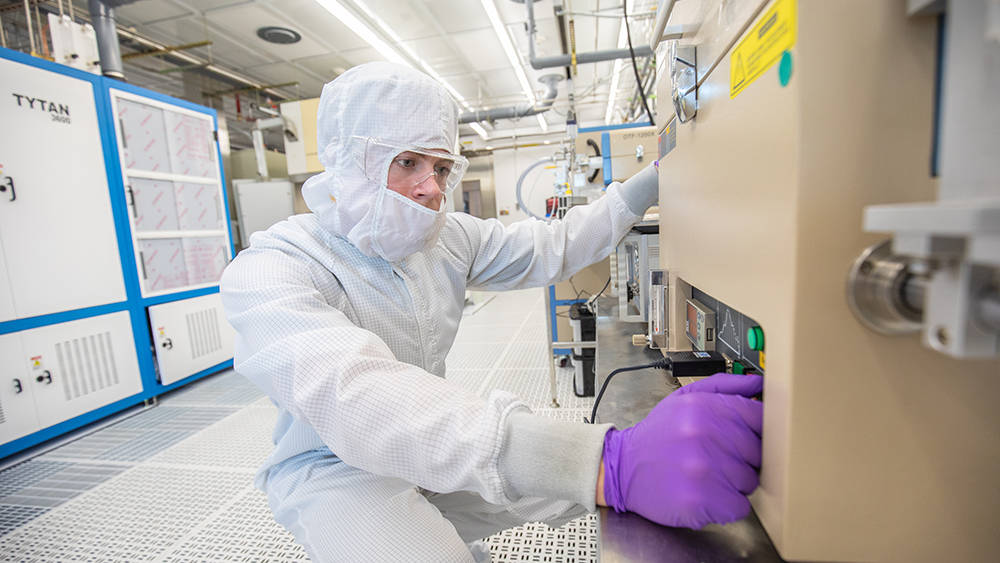

I attended Texas A&M University (TAMU) from August 2016 to May 2020, graduating with a bachelor's degree in electrical engineering. My undergraduate thesis title was "Deep Reactive-Ion Etching Process Development and Mask Selection" and can be found here.
While attending TAMU, I began working at AggieFab Nanofabrication Facility, a shared-user fabrication facility, as a student technician. In April 2020, I was the sole recipient of the Texas A&M Campus Student Employee of the Year award.
You can read my reflections on working at AggieFab here.
I interned at Texas Instruments' D(allas)FAB in the summer of 2019 as an ion implantation manufacturing engineer.
You can find my book reviews here and detailed description of my favorite/important books here.
I'm a big fan of punk, hardcore and its variations, rock, and rap.